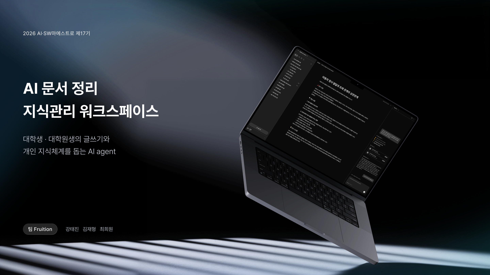
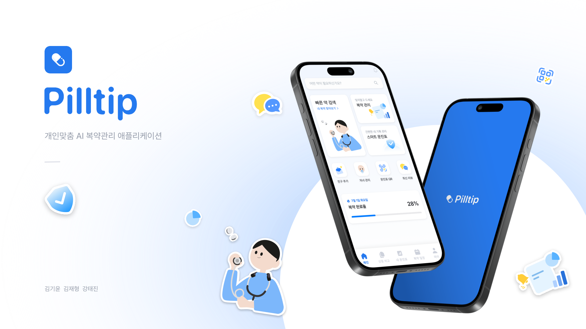
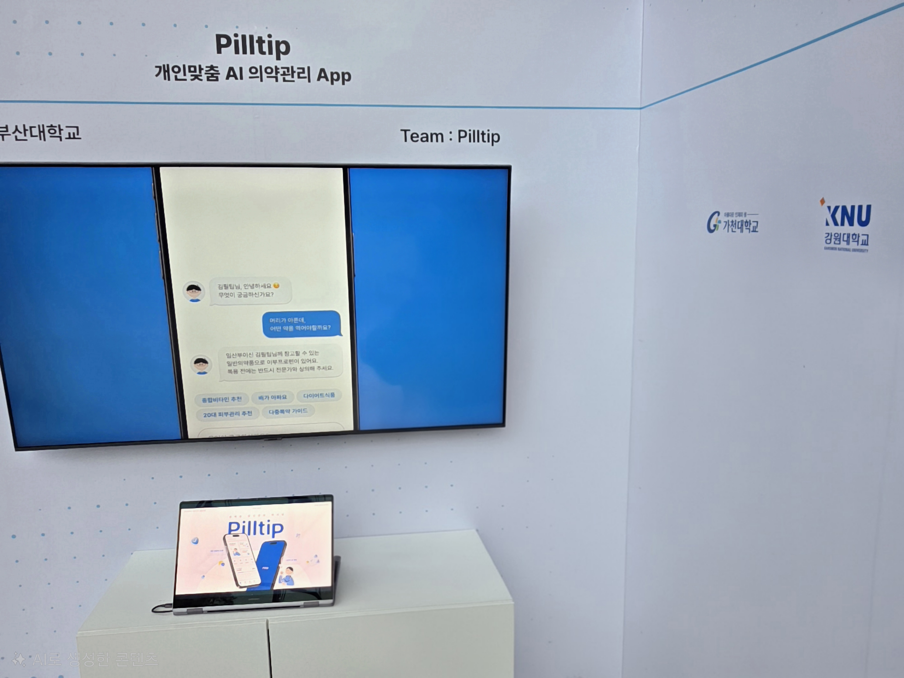
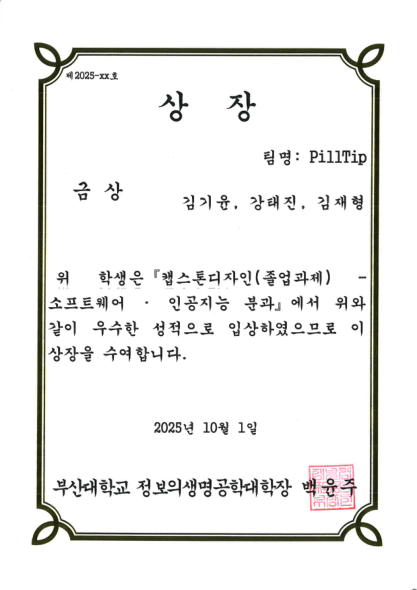
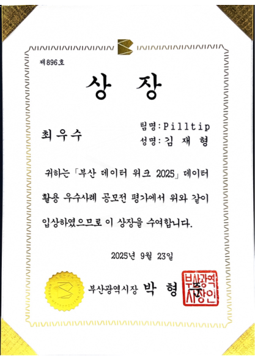
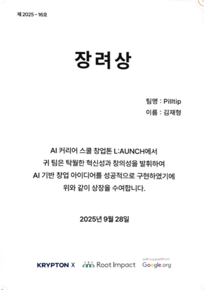
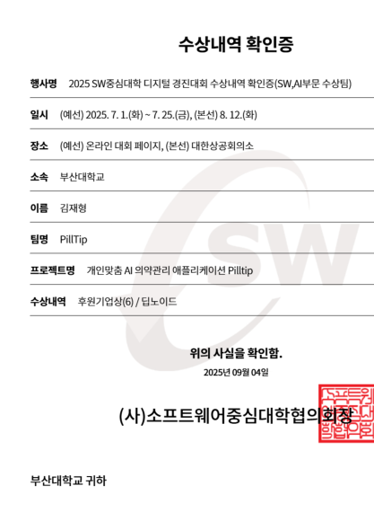

Fruition
올린 문서를 LLM이 Wiki로 정리하고, RAG로 원문 근거를 찾아 답하거나 자연어로 문서를 편집하는 AI 워크스페이스입니다. 지금은 AWS EKS에 배포해 QA를 진행하고 있습니다.

기여와 성과 보기AI APPLICATION DEVELOPER / BACKEND ENGINEER
AI를 최대한 활용해 사람들을 이롭게 하는
서비스를 개발하고자 합니다.
AI가 못하는 게 있을까?
ABOUT ME
문제를 작게 재정의하여 단계적 해결에 몰입하는 것을 좋아합니다.
RAG 근거 충족률을 66.25%에서 91.25%로, AI 문서 편집 품질을 82.5%에서 91.2%로 높이며, AI가 틀린 근거로 답하거나 사용자 문서를 함부로 바꾸지 않도록 평가, 승인, 복구 구조를 설계해 온 AI 애플리케이션 개발자입니다.
문서를 지식으로 활용하는 AI 워크스페이스 Fruition에서 AI 기능 전체를 리드하고 있으며, 복약 위험 정보를 쉽게 전달하는 복약 서비스 Pilltip에서는 백엔드와 AI를 맡았습니다. 모니터 밖에서는 2년째 웨이트 트레이닝을 하고 있습니다.
PROJECTS
올린 문서를 LLM이 Wiki로 정리하고, RAG로 원문 근거를 찾아 답하거나 자연어로 문서를 편집하는 AI 워크스페이스입니다. 지금은 AWS EKS에 배포해 QA를 진행하고 있습니다.

기여와 성과 보기의약품 정보를 쉬운 말로 안내하고, 사용자·가족의 복약 정보와 일정 관리를 돕는 개인 맞춤 AI 복약 서비스입니다.

기여와 성과 보기Claude Code에 작업 계획과 기여 규칙을 주고 이슈 분석부터 PR까지 자동화해, HWP/HWPX 저장 오류 수정 등 PR 7건 병합·Contributor로 등재됐습니다.
GitHub 저장소 ↗ PR #1213 · 병합 ↗ PR #1351 · 제출 ↗ 크게 보기 ↗
크게 보기 ↗Backend 멘티 및 멘토. 멘티 12명 대상 6회 멘토링과 코드 리뷰. HTTP·Servlet·REST API·DB 기초를 보강하는 커리큘럼 개편에 참여했습니다.
APPTIVE 백엔드 멘토 공로상 · 2026.01.09

크게 보기 ↗부산대학교 대표 전시팀으로 Pilltip 부스를 운영하며 방문자 100명 이상에게 시연하고 기술 질의응답을 진행했습니다. 받은 피드백 10건 중 대부분이 건강기능식품 확장 요청이었습니다.
 크게 보기 ↗
크게 보기 ↗하루 한 문제를 목표로 solved.ac 기준 최장 945일 연속 문제를 해결했습니다. 누적 1,659문제, solved.ac Platinum IV. 풀이는 GitHub 저장소에 기록했습니다.
BaekJoon 풀이 저장소 ↗
크게 보기 ↗
캡스톤디자인 금상
소프트웨어·인공지능 분과 / 부산대학교 정보의생명공학대학

크게 보기 ↗
부산 DATA WEEK 최우수상
데이터 활용 우수사례 공모전 / 부산테크노파크

크게 보기 ↗
AI LAUNCH 커리어스쿨 창업톤 장려상
KRYPTON X x Root Impact x Google.org

크게 보기 ↗
SW중심대학 디지털 경진대회 후원기업상
SW중심대학협의회
평균 학점 4.12 / 4.5
평균 학점 4.2 / 4.5
한국산업인력공단